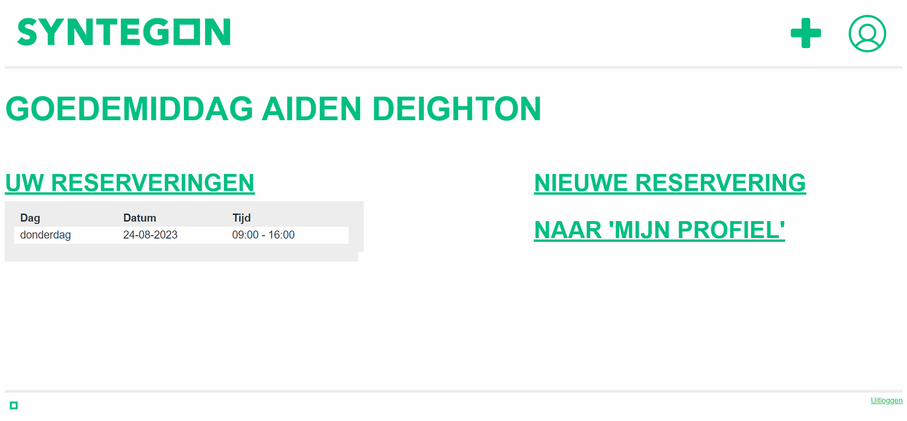
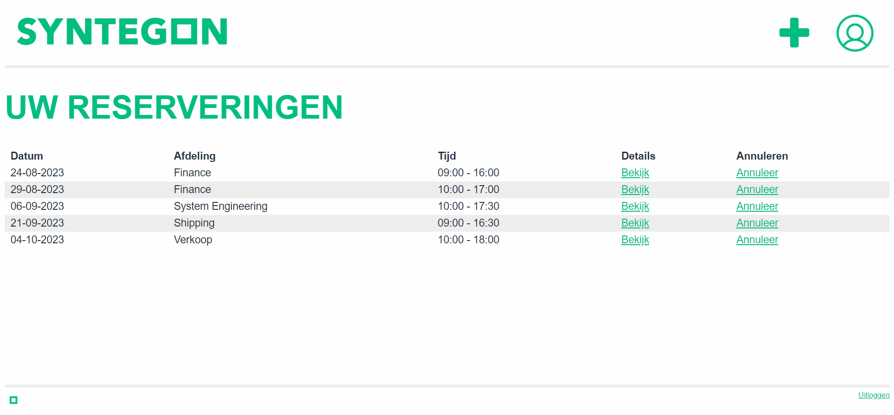
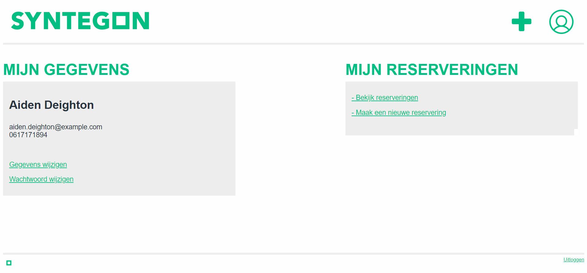
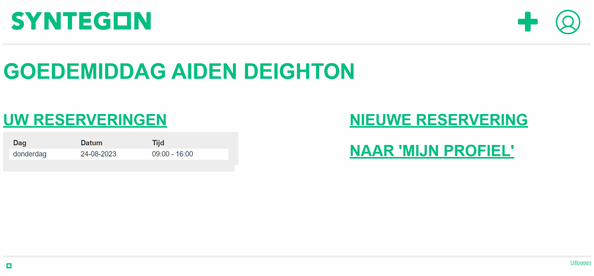
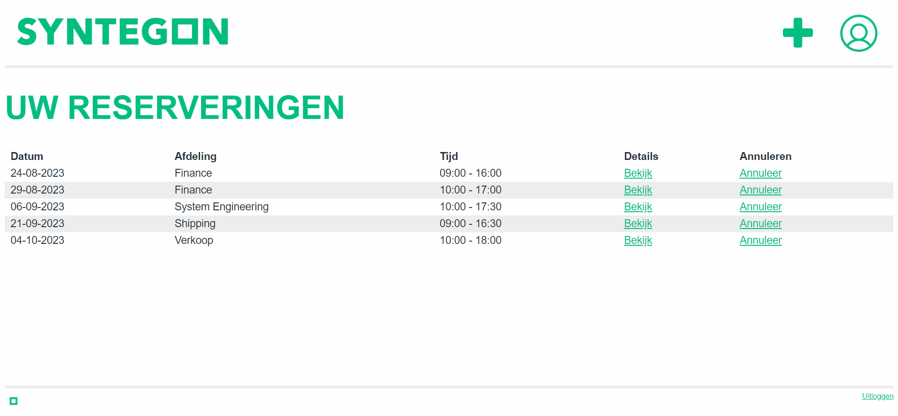
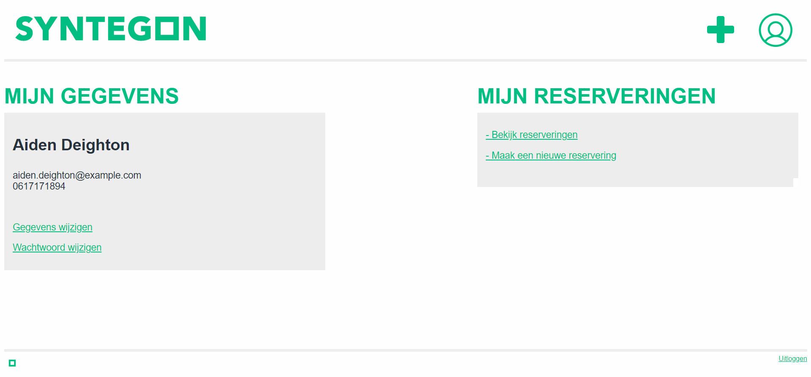

Syntegon Schiedam
During the COVID-19 pandemic, not all employees were allowed to be physically present at Syntegon's office in Schiedam. To help manage workplace capacity, I developed a custom reservation system that allows employees to book desks across various departements.
Through the system, users can select a workplace, set specific time ranges for their reservation, and easily modify or cancel existing bookings. The platform simplifies day-to-day planning, ensures safe workplace distribution, and provides Syntegon with an organized and efficient way to manage office occupancy.
 





Project Context
This system was built for Syntegon Schiedam during a period when COVID-19 restrictions required flexible workplace scheduling.
The goal was to create a practical digital solution that would support employees in managing their presence in the office while adhering to the regulations. PHP and SQL were used to implement a stable, secure and user-friendly reservation environment.
My Role
I was responsible for developing the entire back-end logic using PHP and SQL. This included creating the database structure, building the reservation functionality, implementing time-based booking options, and enabling users to edit or remove their reservations.
My work ensured that the system accurately processed reservations, prevented conflicts, and provided employees with a smooth and reliable booking experience.